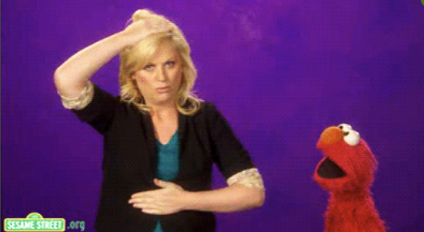
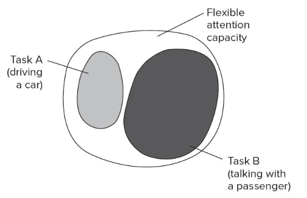
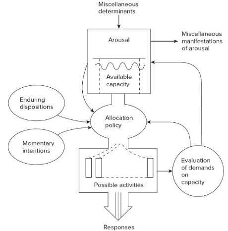
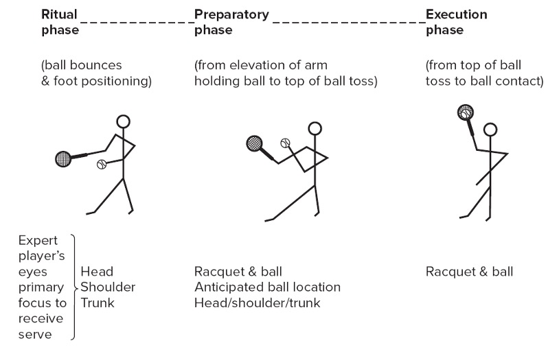

Attention
KIN 377 Motor Learning - Spring 2024 @ CSUN
![]()
2024-04-18
Credits
This presentation was based on Chapter 09 - Attention from Magill and Anderson (2020).
Download Skeleton notes here.
Learning Objectives
- Define the term attention as it relates to the performance of motor skills
- Discuss the concept of attention capacity and identify the similarities and differences between fixed and flexible central-resource theories of attention capacity.
- Describe Kahneman’s model of attention as it relates to a motor skill performance situation
- Describe the differences between central- and multiple-resource theories of attention capacity
- Discuss dual-task techniques that researchers use to assess the attention demands of performing a motor skill.
- Explain the types of attentional focus a person can employ when performing a motor skill.
- Define visual selective attention and describe how it relates to attention capacity limits and motor skill performance.
- Discuss how skilled performers use open and closed motor skills in visual search.
Think, pair, and share activity
Think about a motor skill that you perform that requires you to do more than one thing at the same time ~ 30 seconds
Now, describe this motor skill to your partner. As you do so, talk about:
how you can simultaneously perform these multiple activities by identifying what you think about,
what you do not think about, and
what you visually focus on as you perform these activities
The concentration test
Defining Attention
- Attention refers to several characteristics associated with perceptual, cognitive, and motor activities that establish limits to our performance of motor skills.
- Attention limits influence performance when we do more than one activity simultaneously.
Agenda
- Attention and Multiple-task Performance
- Attention Theories
- Dual-task procedures for assessing attention demands
- Focusing attention
- Attention and Automaticity
- Visual search and motor skill performance
- Training visual search strategies
- Points for the practitioner
1. Attention and simultaneous performance of multiple activities
Attention and Multitasking
- When we simultaneously perform multiple tasks (for example, driving a car, listening to a CD, and talking with a passenger), we sometimes:
- Experience no difficulties in performing all the tasks, but
- Cannot do all the tasks as well as we would like
WHY?
- The answer relates to attention as a performance-limiting factor.

2. Attention Theories
Attention Theories
Filter theories (known as bottleneck theories).
- Difficulty doing multiple tasks at one time because of the inability to serially process multiple stimuli.
- The human brain is like a computer: input info > process info > response is generated
- Bottleneck: Along the way, the system filters out info NOT selected for further processing
Attention Theories
Filter theories (known as bottleneck theories).
- Popular for many years, but…
- Research > Information-processing functions could be carried out in parallel
- How to explain attention limits?
- We need to rely on other theories for answers
Attention Theories
Theories emphasizing attentional resource limits
- We can perform several tasks simultaneously, as long as the resource capacity limits are not exceeded.
- What if these limits are exceeded?
- We experience difficulty performing one or more of these tasks (remember the tap/rub activity?)
- The question about the number of sources
- View 1 > there is one central-resource pool from which all attentional resources are allocated
- View 2 > there are multiple sources for resources
Kahneman’s Attention Theory
View 1: Kahneman’s attention theory: An example of a central resource theory.
- A single source of mental resources from which we derive cognitive effort is presented as a “central pool” of resources that has a flexible capacity.
- Available attention can vary depending on certain conditions:
- The individual, the task, and situation characteristics
- Problem:
- when we try to fit into the large circle more small circles than will fit.

Kahneman’s Attention Theory
Three rules that people use to allocate attention resources when performing multiple tasks.
- Allocate attention to ensure completion of at least one task (Task B)
- Enduring dispositions: Involuntary attention to at least two types of characteristics of events:
- Event is novel for the situation in which it occurs.
- Meaningfulness of the event to us personally.
- Momentary intentions
- People allocate attention according to their specific intentions.
- Can be self-directed or directed by an external source (stop sign)
- People allocate attention according to their specific intentions.

Multiple Resource Theories
Alternative to central resource theories
- Propose that we have several resources for attention.
- Each source has a limited capacity
- Wickens’ model > Resources for processing info are available from 3 sources:
Input and output modalities (vision, limbs, and speech)
Stages of information processing (perception, memory encoding, response output)
Codes of processing information (verbal codes, spatial codes)
Note
Success in performing two or more tasks simultaneously depends on whether those tasks demand our attention from a common resource or from different resources.
Example
The multiple-resource view would explain variations in the situation involving driving a car while talking with a passenger in the following way. When there is little traffic, driving does not demand many resources from any of the three different sources. But when traffic gets heavy, resource demand increases from these two sources: input-output modalities and stages of information processing. These are the same two sources involved in providing attentional resources for carrying on a conversation with a friend. As a result, to maintain safe driving, the person must reduce the resource demand of the conversation activity (Magill and Anderson 2020).
3. Dual-task procedures for assessing attention demands
Dual-task procedure
- Determines attention demands and characteristics of the simultaneous performance of two different tasks.
- Primary task is the task of interest.
- Secondary task performance is the basis to make inferences about the attention demands of the primary task.
4. Focusing Attention
Attentional focus
- The directing of attention to specific aspects of our performance or performance environment.
- Width of focus.
- Focus on environmental and mental activities can be broad or narrow
- Direction of focus.
- Focus can be external (cues in the environment) or internal (internal thoughts, plans, problem-solving activities)
- Attention switching.
- The changing of attentional focus.
Focusing Attention on Movements versus Movement Effects
Does internal or external direction of attentional focus matter?
Action effect hypothesis (Prinz, 1997) explains:
Proposed benefit of external focus during performance
Focus attention on intended outcome (i.e., “effects”) of movements rather than on the movements themselves
- Why: constrained action hypothesis
- Performer consciously attempts to control performance
- Reverses to earlier, less automatic form of movement control
5. Attention and Automaticity
Is attention linked to automaticity?
Automaticity = Performance of a skill (or its parts) with little/no demand on attention capacity.
- Relates to evaluation of the task demands in the component of Kahneman’s model of attention.
- Some problems require more effort, and effortful mental activities are influenced by experience and practice.
- Different brain areas are active when tasks are automatized
- Example: Poldrack (2005) fMRI based research.
Examples
6. Visual Selective Attention (VSA)
Definition of VSA
Image here
- The term refers to detecting and selecting performance-related information in the performance environment.
- Visual search locates relevant information in the environment, enabling a person to determine how to prepare and perform a skill in a specific situation.
Eye movements and visual selective attention.
Image here
- Device can track the location of the central vision while people observe a scene.
- What a person is visually attending to is inferred from the “point of gaze” (locus of central vision).
- What is the relationship between eye movements and visual attention?
- Does what a person looks at (point of gaze) indicate where visual selective attention is directed?
Selective Attention and Point of Gaze
Directing visual attention to an environmental feature without looking directly at it is possible.
- Remember, eye-movement recordings track central vision and not peripheral vision.
image here
Note
Rethink the moto: ‘Keep your eyes on the <> all times.’
How We Select Visual Cues
Visual search and intended actions
The performer looks for specific cues in the performance environment, enabling them to achieve a specific action goal.
Example: Bekkering and Neggers (2002) demonstrated that the focus of initial eye movements differed when participants were told to point to or grasp an object.
Feature integration theory.
Initial visual search is based on specific features, such as color or shape.
Selection of features of interest occurs when a person focuses the attentional spotlight on the master map of all features.
image here
Visual Search and Motor Skill Performance
- Visual search helps gather info that influences three aspects of the action control process:
- Action selection
- Constraint of the selected action
- Timing of action initiation
- Note that these three preparation processes are influenced by visual search in
open motor skillsandclosed motor skills. - Relearning how to pick up a coffee mug (closed)
- Ask a patient to assess the content of the mug before movement initiation:
- Full, hot, etc.
- Shape of the handle
- Ask a patient to assess the content of the mug before movement initiation:
- Passing a soccer ball after receiving it from goalkeeper (open skill)
- Ball speed
- Pressure
Tennis serve example
7. Training Visual Search Strategies
Do we need to train it?
- Visual search success is based on experience in specific performance situations.
- These strategies are often acquired without specific training and without the person’s conscious awareness of the strategies they use.
- Some specific cases it may help
- See the Quiet Eye in the next slide
The Quiet Eye
Refers to the amount of time devoted to the final fixation just before movement initiation.
- It is directed to a critical location or object in the performance context.
- It is a stable fixation of the performer’s gaze.
- Its onset occurs just before the first movement common to all performers of the skill.
- Its duration is longer for elite performers.
Points to the Practitioners
- The capability to do multiple activities simultaneously when performing a motor skill can be situation-specific. This means that a person may succeed more in some situations than others. Note these differences and use them to design further instruction and practice.
- People will be more likely to be distracted while preparing to perform, or performing, a motor skill when events occur in the performance environment that is not usually present in this environment.
- Skilled individuals will be more likely to perform at their best when their arousal or anxiety levels are optimal for performing the skill in the situation they will experience.
- People will perform motor skills better when they focus their conscious attention (i.e., what they “think about”) on the intended outcome of the movement rather than on their own movements.
- You can enhance a person’s visual selective attention in performance situations by providing many opportunities to perform a skill in various situations in which the most relevant visual cues remain the same in each situation.
- Train people to focus on the most relevant cue in the performance environment and then maintain visual contact with that cue just before initiating movement – this relates to ‘quiet eye’.